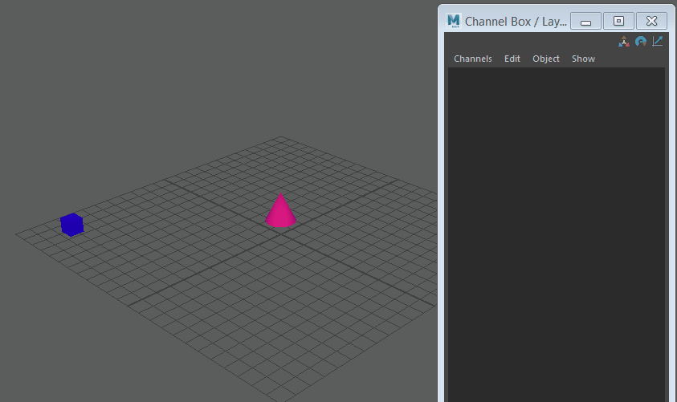

- 选择具有要复制的属性的对象。
- 在“通道盒”(Channel Box)中，选择所需的属性。（您可以选择属性名称或属性文本框。）
- 选择“通道 > 复制选定项”(Channels > Copy Selected)。 （您还可以在属性名称或文本框上单击鼠标右键并从弹出菜单中选择“复制选定项”(Copy Selected)。）
- 选择要将已设关键帧的属性值复制到的对象。 “通道盒”(Channel Box)中显示选定对象属性。
- 选择“通道 > 粘贴选定项”(Channels > Paste Selected)或在属性名称或文本框上单击鼠标右键并从弹出菜单中选择“粘贴选定项”(Paste Selected)。
注： 粘贴属性时，您可能无法在“通道盒”(Channel Box)中看到效果，因为您必须按“播放”(Play)进行刷新。
- 按“播放”(Play)以查看更新的动画。
受控关键点是一种关键帧类型，用于保持与相邻关键帧之间的比例关系。可以为“通道盒”(Channel Box)中的属性设置受控关键点。